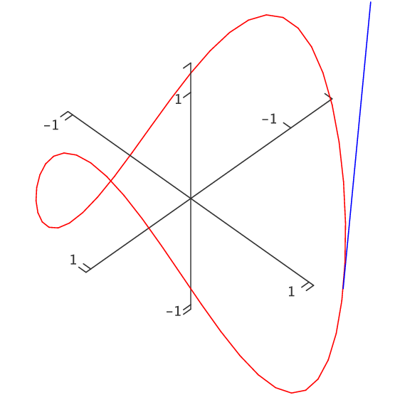

A vector function ${\bf r}(t)=\langle f(t),g(t),h(t)\rangle$ is a function of one variable—that is, there is only one "input'' value. What makes vector functions more complicated than the functions $y=f(x)$ that we studied in the first part of this book is of course that the "output'' values are now three-dimensional vectors instead of simply numbers. It is natural to wonder if there is a corresponding notion of derivative for vector functions. In the simpler case of a function $y=s(t)$, in which $t$ represents time and $s(t)$ is position on a line, we have seen that the derivative $s'(t)$ represents velocity; we might hope that in a similar way the derivative of a vector function would tell us something about the velocity of an object moving in three dimensions.
One way to approach the question of the derivative for vector functions is to write down an expression that is analogous to the derivative we already understand, and see if we can make sense of it. This gives us $$\eqalign{ {\bf r}'(t)&=\lim_{\Delta t\to0}{{\bf r}(t+\Delta t)-{\bf r}(t)\over \Delta t}\cr &=\lim_{\Delta t\to0}{\langle f(t+\Delta t)-f(t),g(t+\Delta t)-g(t), h(t+\Delta t)-h(t)\rangle\over \Delta t}\cr &=\lim_{\Delta t\to0}\langle {f(t+\Delta t)-f(t)\over\Delta t}, {g(t+\Delta t)-g(t)\over\Delta t}, {h(t+\Delta t)-h(t)\over \Delta t}\rangle\cr &=\langle f'(t),g'(t),h'(t)\rangle,\cr }$$ if we say that what we mean by the limit of a vector is the vector of the individual coordinate limits. So starting with a familiar expression for what appears to be a derivative, we find that we can make good computational sense out of it—but what does it actually mean?
We know how to interpret ${\bf r}(t+\Delta t)$ and ${\bf r}(t)$—they are vectors that point to locations in space; if $t$ is time, we can think of these points as positions of a moving object at times that are $\Delta t$ apart. We also know what $\Delta {\bf r}= {\bf r}(t+\Delta t)-{\bf r}(t)$ means—it is a vector that points from the head of ${\bf r}(t)$ to the head of ${\bf r}(t+\Delta t)$, assuming both have their tails at the origin. So when $\Delta t$ is small, $\Delta {\bf r}$ is a tiny vector pointing from one point on the path of the object to a nearby point. As $\Delta t$ gets close to 0, this vector points in a direction that is closer and closer to the direction in which the object is moving; geometrically, it approaches a vector tangent to the path of the object at a particular point.
Unfortunately, the vector $\Delta{\bf r}$ approaches 0 in length; the vector $\langle 0,0,0\rangle$ is not very informative. By dividing by $\Delta t$, when it is small, we effectively keep magnifying the length of $\Delta{\bf r}$ so that in the limit it doesn't disappear. Thus the limiting vector $\langle f'(t),g'(t),h'(t)\rangle$ will (usually) be a good, non-zero vector that is tangent to the curve.
What about the length of this vector? It's nice that we've kept it away from zero, but what does it measure, if anything? Consider the length of one of the vectors that approaches the tangent vector: $$\left|{{\bf r}(t+\Delta t)-{\bf r}(t)\over \Delta t}\right|={|{\bf r}(t+\Delta t)-{\bf r}(t)|\over|\Delta t|}$$ The numerator is the length of the vector that points from one position of the object to a "nearby'' position; this length is approximately the distance traveled by the object between times $t$ and $t+\Delta t$. Dividing this distance by the length of time it takes to travel that distance gives the average speed. As $\Delta t$ approaches zero, this average speed approaches the actual, instantaneous speed of the object at time $t$.
So by performing an "obvious'' calculation to get something that looks like the derivative of ${\bf r}(t)$, we get precisely what we would want from such a derivative: the vector ${\bf r}'(t)$ points in the direction of travel of the object and its length tells us the speed of travel. In the case that $t$ is time, then, we call ${\bf v}(t)={\bf r}'(t)$ the velocity vector. Even if $t$ is not time, ${\bf r}'(t)$ is useful—it is a vector tangent to the curve.
Example 13.2.1 We have seen that ${\bf r}=\langle \cos t,\sin t,t\rangle$ is a helix. We compute ${\bf r}'=\langle -\sin t,\cos t,1\rangle$, and $|{\bf r}'|=\sqrt{\sin^2 t+\cos^2 t+1}=\sqrt2$. So thinking of this as a description of a moving object, its speed is always $\sqrt2$; see figure 13.2.2.
Example 13.2.2 The velocity vector for $\langle \cos t,\sin t,\cos t\rangle$ is $\langle -\sin t,\cos t,-\sin t\rangle$. As before, the first two coordinates mean that from above this curve looks like a circle. The $z$ coordinate is now also periodic, so that as the object moves around the curve its height oscillates up and down. In fact it turns out that the curve is a tilted ellipse, as shown in figure 13.2.3.
Example 13.2.3 The velocity vector for $\langle \cos t,\sin t,\cos 2t\rangle$ is $\langle -\sin t,\cos t,-2\sin 2t\rangle$. The $z$ coordinate is now oscillating twice as fast as in the previous example, so the graph is not surprising; see figure 13.2.4.
|  |
Example 13.2.4 Find the angle between the curves $\langle t,1-t,3+t^2 \rangle$ and $\langle 3-t,t-2,t^2\rangle$ where they meet.
The angle between two curves at a point is the angle between their tangent vectors—any tangent vectors will do, so we can use the derivatives. We need to find the point of intersection, evaluate the two derivatives there, and finally find the angle between them.
To find the point of intersection, we need to solve the equations $$\eqalign{ t&=3-u\cr 1-t&=u-2\cr 3+t^2&=u^2\cr }$$ Solving either of the first two equations for $u$ and substituting in the third gives $3+t^2=(3-t)^2$, which means $t=1$. This together with $u=2$ satisfies all three equations. Thus the two curves meet at $(1,0,4)$, the first when $t=1$ and the second when $t=2$.
The derivatives are $\langle 1,-1,2t\rangle$ and $\langle -1,1,2t\rangle$; at the intersection point these are $\langle 1,-1,2\rangle$ and $\langle -1,1,4\rangle$. The cosine of the angle between them is then $$\cos\theta = {-1-1+8\over\sqrt6\sqrt{18}}={1\over\sqrt3},$$ so $\theta=\arccos(1/\sqrt3)\approx0.96$.
The derivatives of vector functions obey some familiar looking rules, which we will occasionally need.
Theorem 13.2.5 Suppose ${\bf r}(t)$ and ${\bf s}(t)$ are differentiable functions, $f(t)$ is a differentiable function, and $a$ is a real number.
a. $\ds {d\over dt} a{\bf r}(t)= a{\bf r}'(t)$
b. $\ds {d\over dt} ({\bf r}(t)+{\bf s}(t))= {\bf r}'(t)+{\bf s}'(t)$
c. $\ds {d\over dt} f(t){\bf r}(t)= f(t){\bf r}'(t)+f'(t){\bf r}(t)$
d. $\ds {d\over dt} ({\bf r}(t)\cdot{\bf s}(t))= {\bf r}'(t)\cdot{\bf s}(t)+{\bf r}(t)\cdot{\bf s}'(t)$
e. $\ds {d\over dt} ({\bf r}(t)\times{\bf s}(t))= {\bf r}'(t)\times{\bf s}(t)+{\bf r}(t)\times{\bf s}'(t)$
f. $\ds {d\over dt} {\bf r}(f(t))= {\bf r}'(f(t))f'(t)$
Note that because the cross product is not commutative you must remember to do the three cross products in formula (e) in the correct order.
When the derivative of a function $f(t)$ is zero, we know that the function has a horizontal tangent line, and may have a local maximum or minimum point. If ${\bf r}'(t)={\bf 0}$, the geometric interpretation is quite different, though the interpretation in terms of motion is similar. Certainly we know that the object has speed zero at such a point, and it may thus be abruptly changing direction. In three dimensions there are many ways to change direction; geometrically this often means the curve has a cusp or a point, as in the path of a ball that bounces off the floor or a wall.
Example 13.2.6 Suppose that ${\bf r}(t)=\langle 1+t^3,t^2,1\rangle$, so ${\bf r}'(t)=\langle 3t^2,2t,0\rangle$. This is $\bf 0$ at $t=0$, and there is indeed a cusp at the point $(1,0,1)$, as shown in figure 13.2.5.
Sometimes we will be interested in the direction of ${\bf r}'$ but not its length. In some cases, we can still work with ${\bf r}'$, as when we find the angle between two curves. On other occasions it will be useful to work with a unit vector in the same direction as ${\bf r}'$; of course, we can compute such a vector by dividing ${\bf r}'$ by its own length. This standard unit tangent vector is usually denoted by ${\bf T}$: $${\bf T}={{\bf r}'\over|{\bf r}'|}.$$ In a sense, when we computed the angle between two tangent vectors we have already made use of the unit tangent, since $$\cos\theta = {{\bf r}'\cdot{\bf s}'\over|{\bf r}'||{\bf s}'|}= {{\bf r}'\over|{\bf r}'|}\cdot{{\bf s}'\over|{\bf s}'|}$$
Now that we know how to make sense of ${\bf r}'$, we immediately know what an antiderivative must be, namely $$\int {\bf r}(t)\,dt = \langle \int f(t)\,dt,\int g(t)\,dt,\int h(t)\,dt \rangle,$$ if ${\bf r}=\langle f(t),g(t),h(t)\rangle$. What about definite integrals? Suppose that ${\bf v}(t)$ gives the velocity of an object at time $t$. Then ${\bf v}(t)\Delta t$ is a vector that approximates the displacement of the object over the time $\Delta t$: ${\bf v}(t)\Delta t$ points in the direction of travel, and $|{\bf v}(t)\Delta t|=|{\bf v}(t)||\Delta t|$ is the speed of the object times $\Delta t$, which is approximately the distance traveled. Thus, if we sum many such tiny vectors: $$\sum_{i=0}^{n-1}{\bf v}(t_i)\Delta t$$ we get an approximation to the displacement vector over the time interval $[t_0,t_n]$. If we take the limit we get the exact value of the displacement vector: $$\lim\sum_{i=0}^{n-1}{\bf v}(t_i)\Delta t = \int_{t_0}^{t_n}{\bf v}(t)\,dt = {\bf r}(t_n)-{\bf r}(t_0).$$ Denote ${\bf r}(t_0)$ by ${\bf r}_0$. Then given the velocity vector we can compute the vector function ${\bf r}$ giving the location of the object: $${\bf r}(t)={\bf r}_0+\int_{t_0}^t {\bf v}(u)\,du.$$
Example 13.2.7 An object moves with velocity vector $\langle \cos t, \sin t, \cos t\rangle$, starting at $(1,1,1)$ at time $0$. Find the function ${\bf r}$ giving its location. $$\eqalign{ {\bf r}(t)&=\langle 1,1,1\rangle+\int_0^t \langle \cos u, \sin u, \cos u\rangle\,du\cr &=\langle 1,1,1\rangle+\left.\langle \sin u, -\cos u,\sin u\rangle \right|_0^t\cr &=\langle 1,1,1\rangle+\langle \sin t, -\cos t,\sin t\rangle- \langle 0,-1,0\rangle\cr &=\langle 1+\sin t, 2-\cos t,1+\sin t\rangle\cr }$$ See figure 13.2.6.
Exercises 13.2
Ex 13.2.1 Find ${\bf r}'$ and $\bf T$ for ${\bf r} = \langle t^2,1,t\rangle$. (answer)
Ex 13.2.2 Find ${\bf r}'$ and $\bf T$ for ${\bf r} = \langle \cos t, \sin 2t, t^2\rangle$. (answer)
Ex 13.2.3 Find ${\bf r}'$ and $\bf T$ for ${\bf r} = \langle \cos(e^t),\sin(e^t),\sin t\rangle$. (answer)
Ex 13.2.4 Find a vector function for the line tangent to the helix $\langle \cos t,\sin t, t\rangle$ when $t=\pi/4$. (answer)
Ex 13.2.5 Find a vector function for the line tangent to $\langle \cos t,\sin t, \cos 4t \rangle$ when $t=\pi/3$. (answer)
Ex 13.2.6 Find the cosine of the angle between the curves $\langle 0,t^2,t\rangle$ and $\langle \cos(\pi t/2),\sin(\pi t/2), t\rangle$ where they intersect. (answer)
Ex 13.2.7 Find the cosine of the angle between the curves $\langle \cos t,-\sin(t)/4,\sin t\rangle$ and $\langle \cos t,\sin t, \sin(2t)\rangle$ where they intersect. (answer)
Ex 13.2.8 Suppose that $|{\bf r}(t)|=k$, for some constant $k$. This means that $\bf r$ describes some path on the sphere of radius $k$ with center at the origin. Show that $\bf r$ is perpendicular to ${\bf r}'$ at every point. Hint: Use Theorem 13.2.5, part (d).
Ex 13.2.9 A bug is crawling along the spoke of a wheel that lies along a radius of the wheel. The bug is crawling at 1 unit per second and the wheel is rotating at 1 radian per second. Suppose the wheel lies in the $y$-$z$ plane with center at the origin, and at time $t=0$ the spoke lies along the positive $y$ axis and the bug is at the origin. Find a vector function ${\bf r}(t)$ for the position of the bug at time $t$, the velocity vector ${\bf r}'(t)$, the unit tangent ${\bf T}(t)$, and the speed of the bug $|{\bf r}'(t)|$. (answer)
Ex 13.2.10 An object moves with velocity vector $\langle \cos t, \sin t, t\rangle$, starting at $\langle 0,0,0\rangle$ when $t=0$. Find the function ${\bf r}$ giving its location. (answer)
Ex 13.2.11 The position function of a particle is given by ${\bf r}(t) = \langle t^2,5t,t^2-16t\rangle$, $t\geq 0$. When is the speed of the particle a minimum? (answer)
Ex 13.2.12 A particle moves so that its position is given by $\langle \cos t, \sin t, \cos(6t)\rangle$. Find the maximum and minimum speeds of the particle. (answer)
Ex 13.2.13 An object moves with velocity vector $\langle t, t^2, \cos t\rangle$, starting at $\langle 0,0,0\rangle$ when $t=0$. Find the function ${\bf r}$ giving its location. (answer)
Ex 13.2.14 What is the physical interpretation of the dot product of two vector valued functions? What is the physical interpretation of the cross product of two vector valued functions?
Ex 13.2.15 Show, using the rules of cross products and differentiation, that $${d\over dt} ({\bf r}(t) \times {\bf r}'(t))= {\bf r}(t) \times {\bf r}''(t).$$
Ex 13.2.16 Determine the point at which ${\bf f}(t)=\langle t, t^2, t^3 \rangle$ and ${\bf g}(t) =\langle \cos(t), \cos(2t), t+1 \rangle$ intersect, and find the angle between the curves at that point. (Hint: You'll need to set this one up like a line intersection problem, writing one in $s$ and one in $t$.) If these two functions were the trajectories of two airplanes on the same scale of time, would the planes collide at their point of intersection? Explain. (answer)
Ex 13.2.17 Find the equation of the plane perpendicular to the curve ${\bf r}(t) = \langle 2\sin(3t),t,2\cos(3t)\rangle$ at the point $(0,\pi,-2)$. (answer)
Ex 13.2.18 Find the equation of the plane perpendicular to $\langle \cos t, \sin t, \cos(6t)\rangle$ when $t=\pi/4$. (answer)
Ex 13.2.19 At what point on the curve ${\bf r}(t) = \langle t^3,3t,t^4\rangle$ is the plane perpendicular to the curve also parallel to the plane $6x+6y-8z=1$? (answer)
Ex 13.2.20 Find the equation of the line tangent to $\langle \cos t, \sin t, \cos(6t)\rangle$ when $t=\pi/4$. (answer)